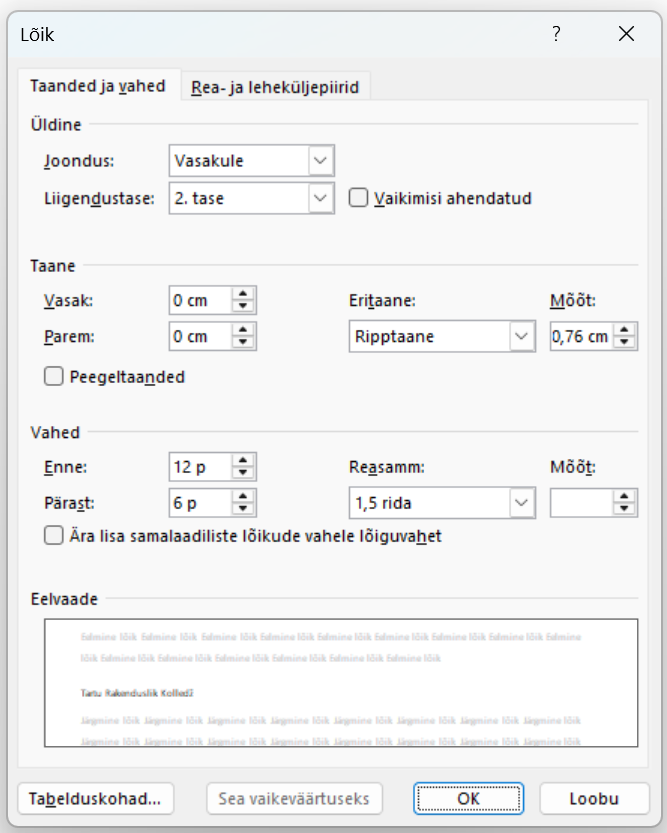

3.4 Pealkiri 2(Heading 2)
Vali laad Pealkiri 2(Heading 2), parem hiireklõps laadil ja vali Muuda stiili (Modify).
Seadista järgnevalt:
- Font: Calibri;
- Laad: Paks(Bold)
- Suurus 14p;
- Reasamm: 1,5;
- Joondus: Vasakule;
Vorming (Format) → Lõigud (Paragraphs)
- Lõiguvahe enne (before): 12p;
- Lõiguvahe pärast (after): 6p;
